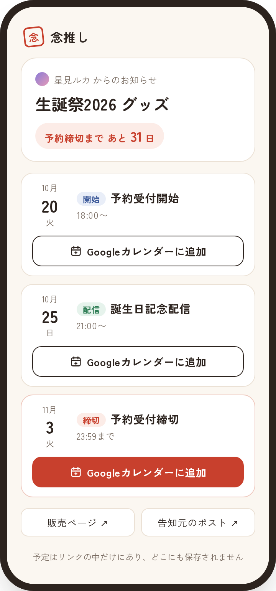
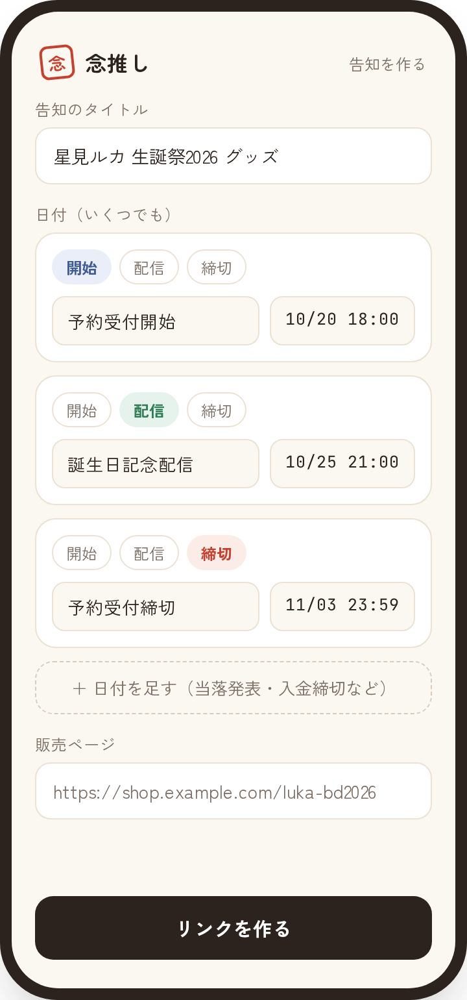
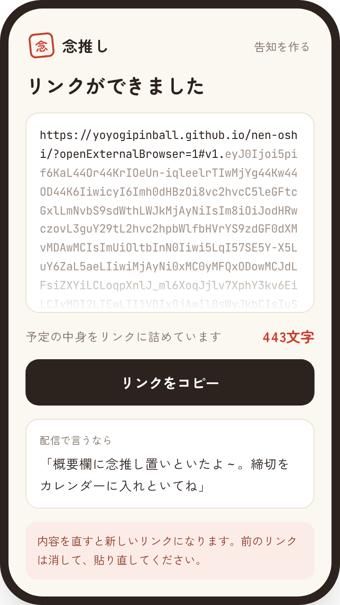

開発中 / 構想とデモまで
念推し
推しが告知した締切や開催日を、ファンのGoogleカレンダーへ届けるWebサイトの構想です。
推しは告知の内容からリンクを作り、配信の概要欄に貼ります。
ファンはそのリンクを開き、ボタンを押すだけで予定を追加できます。
グッズの予約締切や入金期限を聞き逃して、買い損ねるのを防ぐのが目的です。
オープンソースのCalf（MITライセンス）から派生して作っています。
- 種類
- Webサイト（静的）
- 技術
- React / Vite / GitHub Pages

ファンがリンクを開いたときの画面（デモ）。
予定ごとに、Googleカレンダーへの追加ボタンが並びます。
画像を選択すると拡大できます画面（デモ）


受付開始、記念配信、締切のように、1つの告知に日付をいくつでも入れられます。


予定の中身はリンクに詰め込みます。
サーバーに保存しない代わりに、URLは長くなります。
考えていること
- 予定をサーバーに保存しない
予定の中身はURLの
#以降に入れます。#以降はブラウザがサーバーへ送らないので、公開先のアクセスログにも残りません。 - 日付を1本のリンクにまとめる
グッズなら受付開始と締切、ライブなら申込から当落、入金締切、本番まで。
日付がいくつもある告知を、1本のリンクで配ります。
- 追加先はGoogleカレンダーに絞る
iPadとAndroidの実機で、YouTube、X、LINEのアプリから開いて追加できるかを確かめました。
iOSの標準カレンダーは、Safari以外から開くとサーバー無しでは追加できませんでした。
そこで、どのアプリから開いても追加できたGoogleカレンダーに絞りました。
- LINEで共有されたリンクにも対応
LINEのアプリ内で開くと、予定がGoogleカレンダーへ渡りません。
リンクに「外部ブラウザで開く」指定を付けて回避します。
- 通知はファンのカレンダーに任せる
通知を出すのは、ファン自身のGoogleカレンダーです。
念推しのサイトが止まっていても、通知は届きます。